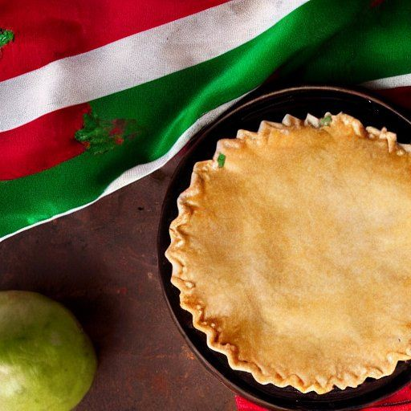

Pâté mexicain végé
Par: Pascal
Ingrédients
-
1 abaisse de pâte brisée non cuite

-
2 oignon
-
1/2 sachet de PVT surgelé
-
2 gousse d'ail
-
1/2 pot de tomate séché au soleil
-
1 1/2 c. à thé de moutarde de dijon
-
2 c. à soupe de ketchup
-
2 c. à soupe de pâte de tomate
-
3 c. à soupe d'eau
-
1 c. à thé de paprika fumé
-
1/2 c. à thé de chili en flocons
-
1 t de fromage cheddar